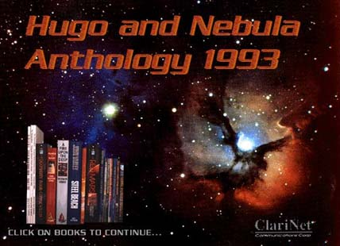

The "Electric Science Fiction" 1993 Hugo/Nebula Award Anthology
The eBay auctions of the CDs are over. Thanks to all those who bid and to the winners. Now that the auctions have set a price, it is still possible to get one of the remaining CDs -- details below. For commercial purposes, due to contractual restrictions, the CD is "out of print."
- About the anthology
- Complete table of contents
- Details on the file names and sizes
 (Actual opening screen from the Windows presentation)
About the anthology
WHAT'S IN IT
In brief...
- All the Hugo® nominated novels in full text
- Special version of A Fire Upon the Deep with almost 500K of detailed hypertext annotations by Vernor Vinge
- All the Hugo-nominated short fiction
- All the Nebula-nominated short fiction
- Four Nebula-nominated novels, including the winner and the 94 winner
- All the Hugo winners, including both Hugo winning novels and the Nebula winning novel!
- All the Hugo-nominated pro artworks
- Portfolios from most of the Hugo-nominated pro artists
- Samples from Hugo-nominated fan writers, fanzines and fan artists
- Writing samples from all the nominees for the Campbell award for best new writer of the year
- Volumes I through IV of the rec.humor.funny TeleJokeBook series
- Information on fandom, WorldCons, ConFrancisco and the awards
- A Hugo ballot and information on how to vote
- An ESF ballot for our own award
- Author blurbs, bios and bibliographies
Plus the following supplemental material:
- Video clips of authors introducing stories
- Author photos
- Illustrations
- A Multimedia presentation for MS Windows
- Archives of Hugo-winning SF information and discussion
- Let's Hear it for the Deaf Man -- non-fiction Hugo-nominee
- Author's reading of start of China Mountain Zhang
The original publisher's prices to obtain all this material add up to well over $200 -- if you can still get it.
The world's first major eBook
I believe this CD is now a piece of history, as the world's first major eBook project using current fiction. At the time it was the largest anthology of current fiction ever published in one volume, and it may retain that title even today. Prior ventures were small or featured either unpublished writers or public domain works. This anthology featured novels that in most cases had not yet come out in paperback.WHAT FORMAT IS IT IN?
The CD-ROM is in a special format for the multimedia presentation (Windows or Mac), but also have the text files in Microsoft RTF format and the images in JPEG or GIF format. We'll include the source and binaries to programs to translate RTF format into plain ASCII, enhanced ASCII and other formats. Most word processors can read this format already. (Enhanced ASCII is ASCII with overstrikes to provide underlining and bold face. It's easy to remove the overstrikes if they are a problem.)Translators are available on the net to map RTF to troff. Most Mac and PC word processors can map RTF to Adobe PostScript.
The CD-ROM is in ISO 9660 format as well as Macintosh HFS format. (One CD-ROM has both formats.)
However, we feel that there are problems with the Macintosh presentation. The book reader is poor and to read the annotated Fire Upon the Deep you must read the RTF files with an RTF compatible word processor. such as MS Word.
Realize that this is 1993 technology. CD-Roms were brand new and eBook publishing software barely existed. Don't expect 21st century stuff.
Note that today, you don't need to install the CD on Windows 95 or later to run it. On older versions of Windows 3.1 you need to do an install to get video for windows and other tools. Modern users can just run the multimedia viewer right from the CD, and load the anthology from there.
Information is available for those interested in paper jokebooks.
WHAT DOES IT COST?
While it was in print, the main CD was $29.95. The TeleJokeBook CD was a defective first edition which was missing all long dashes in many of the SF stories in the windows presentation. Full details on file sizes are available.HOW DO I ORDER IT?
As noted, the CD is now "out of print" however I have released some of my private stock for charitable donations. Fewer than 2,000 were made, the vast majority of those were sold in '93.You can get one if you become a member/donor to the Electronic Frontier Foundation at the Pioneer level of $200 and above. This is actually a good deal, since in an eBay charity auction for the EFF, disks went for as high as $320.
To get one, go to the page to join EFF. Fill out the member or donor form with a contribution over $200. In the comment box, include a note that you would like the Hugo/Nebula CD. You can also have a T-shirt as well, if you like.
Donations to the EFF are tax deductable. Because you will be receiving special merchandise, some of your contribution (such as the original retail price of $29.95) may not be deductable. Consult your tax advisor. Don't forget to check to see if your employer has a matching donation program as well. The EFF takes checks, credit cards, PayPal and many other forms of online payment.
This page will be updated when the EFF is out of CDs. Please note that because the CDs are rare, only donors who ask for them get one. Prior donors and people who don't ask will not receive one.